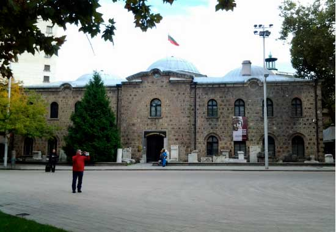

<div class="page-header">
  <h1>Нека да разгледаме</h1>
</div>
<div class="row">
	<div class="col-xs-12 col-md-12">
		<ul class="list-group">
			<li class="list-group-item list-group-item-success">Националният археологически институт с музей  в София е 
			най-старият в България!</li>
			<li class="list-group-item list-group-item-info">Той съществува от 1892г.</li>
			<li class="list-group-item list-group-item-warning">Помещава се в бившата Буюк Джамия, построена 1474г. (XV в.)</li>
			<li class="list-group-item list-group-item-danger">Официално се открива музея през 1905г. с всички архиологически находки.</li>
		</ul>
	</div>	
</div>
<div class="row">
  <div class="col-xs-12 col-md-12">
    <a href="javascript: ;" class="thumbnail">
      
    </a>
  </div>
</div>
